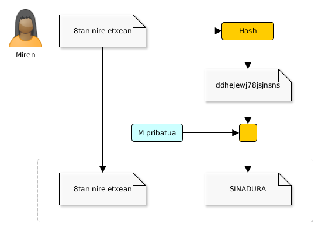
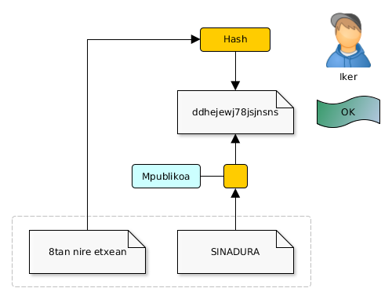
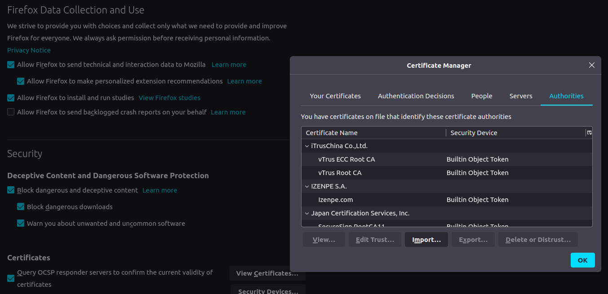

Zifraketa aplikazioak
Mikel Egaña Aranguren
Zifraketa aplikazioak
- Sinadura
- Zertifikatuak
- TLS
- SSH
Sinadura digitala
Mirenek Ikerreri mezua bidaltzen dio, gako publikoko sistema erabiliz
Edonork ezin du irakurri Mirenen Ikerrentzako mezua, baina edozeinek bidali ahal du
Nola daki Ikerrek Mirenek bidali diola edo inork ez duela mezua aldatu?
Soluzioa: Mirenek mezua sinatzen du
Sinadura digitala
Erabiltzaile zilegiak soilik sinatu ahal du bere dokumentua
Ezin du inork sinadura faltsutu
Edozeinek balioztatu ahal du sinadura digitala
Sinadura digitala
Ezin da sinadura bat berrerabili
Ezin da sinadura bat aldatu
Ezin da dokumentu bat sinatu izana ukatu
Ezin da dokumentu bat aldatu sinatu ostean
Kautotzea, Osotasuna eta Zapuztezintasuna
Sinadura digitala
Mirenek mezuaren laburpen kriptografikoa lortzen du: RC=hash(m)
Mirenek bere klabearekin zifratzen du laburpen kriptografikoa: Sinadura=e(RC,Mpri)
Mirenek bere mezua (Zifratua edo zifratu gabe) eta bere sinadura bidaltzen ditu
Sinadura digitala

Sinadura digitala
Ikerrek sinadura deszifratzen du Mirenen gako publikoa erabiliz: RC=(Sinadura,Mpu)
Ikerrek mezuaren laburpen kriptografikoa lortzen du: RC'=hash(m)
Ikerrek RC' eta RC alderatzen ditu ezer aldatu ez dela baieztatzeko
Sinadura digitala

Sinadura digitala
Sinatzeaz gain, Mirenek mezua zifratzen badu, Ikerrek bakarrik irakurriko du: Konfidentzialtasuna, Osotasuna, Kautotzea, Zapuztezintasuna
Hurrengoak erabiltzea dauka:
- Kriptografia asimetrikoa
- Kriptografia hibridoa
Sinadura digitala
Kriptografia asimetrikoa. Ikerreri bidali:
- Mezu zifratuaren kriptograma (Mpri eta Ipu-rekin zifratua)
- Bere sinadura digitala (Laburpen kriptografikoa,
Mpri-rekin zifratua)
Sinadura digitala
Kriptografia hibridoa. Ikerreri bidali:
- Saio gakoarekin zifratutako mezuaren kriptograma
- Saio gako zifratuaren kriptograma, Ipu-rekin zifratua
- Bere Sinadura digitala (Laburpen kriptografikoa,
Mpri-rekin zifratua)
Sinaduren konfidantza
Sinadura digitalak erabilita ere:
- Nola dakigu sinadura bat esaten duenarena dela?
- Nola bermatzen du Zertifikazio Autoritate batek hori horrela dela?
- Ezin gara fidatu Zertifikazio Autoritate batek bermatu duen sinadura batetaz?
Sinaduren konfidantza (Web of trust)
- PGP, GnuPG eta horrelakoak erabiltzen dira
- Erabiltzaile batek bermatzen du, bere gako pribatuarekin sinatuz, beste erabiltzaile baten gako publikoa fidagarria dela
- Konfidantza hedatzen doa, gakoak sinatzen dituzten erabiltzaileei ematen diegun konfidantzaren arabera
Konfidantza mailak
- Ezezaguna: erabiltzaile horrek sinatzen duenaz ez gara fidatzen (ezezaguna delako)
- Eza: erabiltzaile horrek sinatzen duenaz ez gara fidatzen
(Badakigulako txarto egiten duela)
- Marginala: konfidantza marginala duten bi erabiltzailek sinatutako klabeengan konfidantza dugu
- Osoa: Erabiltzaile horrek sinatzen duen guztiaz fidatzen gara
Public Key Infraestructure (PKI)
Erakundeak/pertsonak beren gako publikoekin lotzeko aukera ematen duen azpiegitura
- Web of Trust: PKI autoritate zentralik gabeko PKI-a, edonork ziurta dezake beste baten gako publikoa
- Ziurtagiriak: aginte zentrala duen PKI-a,
CA-ek (Certification Authority) soilik eman dezakete bermea
Ziurtagiri digitalak
- Erakunde batek (AC) erabiltzailea/erakundea (bere gako publikoa) benetan esaten duena dela bermatzen du (AC-rekiko daukagun konfidantzaren araberakoa)
- Gako publiko guztiak guk gorde beharrean, AC-ak gordetzen ditu
Ziurtagiri digitalak
- CA-ak ziurtagiri digitala argitaratzen du
- Ziurtagiri digitalean CA-ak bere gako pribatuarekin erabiltzaile/entitatearen gako publikoa sinatzen du
Erregistro Agentzia
- CA-rekiko independientea
- Erabiltzaile/erakundearen identitatea bermatu ziurtagiria sortu baino lehen
- Aldundiak, Gizarte Segurantza, Zuzenean,...
Ziurtagiri digitalak: X.509
- International Telecommunication Union (ITU): X.509
- Nortasun bat (pertsona, erakundea...) eta gako publiko bat dauzka
- AC batek sinatua - ziurtagiria duen pertsona/erakundeak:
- Bere gako pribatuarekin sinatu ahal du (Sinadura hori bermatua -AC-ak sinatua- dagoen gako publikoarekin konprobatu ahal da)
- Komunikazio seguruak ezarri (SSL, ...)
- AC-ak bere datu basean gorde behar du: Distinguished Name zerrenda bat, eta azpiko CA-en zerrenda bat
Ziurtagiri digitalak: X.509
- Konfidantza katea (Certification path validation algorithm)
- Certificate Revocation List (CRL)
Certificate Revocation List (CRL)
Ezeztatutako ziurtagirien zerrenda publiko bat, CA-k mantentzen duena
Ezeztatzea: AC-ak adierazten du ziurtagiri hori ez dela fidagarria
Certificate Revocation List (CRL)
RFC 5280-an definitua
ezeztatzeko arrazoi posibleak: unspecified, keyCompromise, cACompromise, affiliationChanged, superseded, cessationOfOperation, certificateHold, removeFromCRL, privilegeWithdrawn, aACompromise
OCSP (Online Certificate Status Protocol)
- RFC 2560
- Ziurtagiri digital baten egoera online baliozkotzea
- CRLs bidezko egiaztapena baino eraginkorragoa: CRL-ak gero eta gutxiago erabiliak
- Abantaila: etengabe eguneratzea
- Desabantaila: konexioaren beharra egiaztapenerako
OCSP (Online Certificate Status Protocol)
- Zerbitzua ematen duen AC bakoitzak OCSP zerbitzari bat mantentzen du
- Zerbitzu honek eskaera estandarizatu bat igortzen duten eta erantzuna interpretatzen dakiten bezero-aplikazioei erantzuten die
Ziurtagiri egitura
Certificate
Version Number
Serial Number
Signature Algorithm ID
Issuer Name
Validity period
Subject name
Ziurtagiri egitura
Subject Public Key Info
Public Key Algorithm
Subject Public Key
...
Certificate Signature Algorithm
Certificate Signature
Ziurtagiri egitura
Distinguished Name
- C: country
- SP: state or province
- Locality: L
- Organization: O
- Organizational Unit: OU
- Common Name: CN
Ziurtagiri egitura

Erro-ziurtagiria
Subject Name == Issuer Name
Bere burua sinatzen du: konfidantzaren jatorria da (Entitate horrekiko zuzeneko konfidantza dugu, ez dago kanpoko gako pribaturik bere gako publikoa sinatzen duena)
Ziurtagiria
- Azken erabiltzailearen ziurtagiria (pertsona juridikoa)
- Software-sinaketaren ziurtagiria
- SSL zerbitzariaren ziurtagiria
Inplementazioa
- Sistema eragileek eta nabigatzaileek erro-ziurtagiriak dituzte, berezko konfidantza hartuz
- Firefox OCSP query responder, Izenpe
Inplementazioa

Let's encrypt
Ziurtagiriak doan ematen dituena CA-a, HTTP konexio guztiak zifratuak izan daitezen
https://letsencrypt.org/
Komunikazio seguruak
TLS/SSL - X.509 (RFC 5280) protokoloan oinarritutakoak:
- HTTPS: web
- S/MIME, SMTP, POP, IMAP: email
- EAP-TLS: wifi
- LDAP: kautotzea
- VPN (OpenVPN): sare seguruak
Transport Layer Security (TLS)
Transport Layer Security (TLS)
- TLS hasiera
- TLS hand-shake
- TLS konexioa
TLS hasiera
- Bezeroak zerbitzariari TLS erabiltzeko eskatzen dio
- HTTP: 80 portutik 443 portura aldatu
- Email:
STARTTLS komandoa
TLS hand-shake
- Bezeroak zerbitzariari balio zaizkion algoritmoen zerrenda bat aurkezten dio: simetrikoak, asimetrikoak, laburpen
- Zerbitzariak zerrenda horretatik balio zaizkionak hautatzen ditu
- Zerbitzariak bezeroari ziurtagiria aurkezten dio, bezeroak CA-ri esker baliozkotzen duena
TLS hand-shake
- Bezeroak saio gako bat sortzen du (Zifraketa simetrikoa):
- Bezeroak ausazko zenbakia ekoizten du, zerbitzariaren gako publikoarekin zifratzen du eta zerbitzariari bidaltzen dio. Bai bezeroak bai zerbitzariak gakoa sortzen dute zenbaki horretatik abiatuta
- Diffie-Hellman algoritmoa erabiliz gako amankomun bat sortzen dute bezeroak eta zerbitzariak
TLS konexioa
- hand-shake ondo atera bada soilik
- Datuak sesio gakoarekin zifratzen dira eta osotasuna adostutako laburpen algoritmoekin bermatzen da
- Egoera mantentzen duen konexioa da (stateful)
SSH (Secure Shell)
- Urruneko zerbitzarietara konektatzeko erabiltzen den protokolo kriptografikoa
- Trust On First Use (TOFU): konexioa ezartzeko gure klabe publikoa urruneko zerbitzarian jartzea nahiko dugu
- Hortik aurrera, TLS moduan, saio gako bat erabiltzen da datuak transmitizeko
SSH: erabilpenak
- Urruneko makina batean sartu eta komandoak exekutatu
- SFTP bidezko artxiboen transferentzia
- SCP bidez datuak kopiatu
- Tunelak
- Port fowarding


{kind=link}
{kind=link}